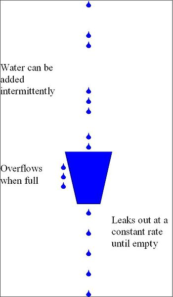

与实时视频相关参数包含：帧率、码率、时延、抖动等。帧率体现了视频的流畅性，要想达到较好的流畅性体验要求——网络视频帧率不低于24帧，视频会议帧率不低于15帧。在实际开发中，我们遇到了不少问题
本文主要研究WebRTC中的帧率调整策略，解决上述实际开发中帧率较低的问题，以期达到较好的流畅性体验。
帧率计算方法 帧率并非恒定值，帧率大小反映的是每秒多少视频帧的统计值。在视频会议中，同一路视频流发送端的帧率和接收端的帧率并不相同。对于发送端帧率，我们需要明确：发送端输出帧率不等于摄像头采集帧率，编码器实际输入帧率不等于摄像头采集帧率，发送端帧率为编码器输出帧率 。
发送端帧率 摄像头采集帧率决定了发送端输入帧率的最大值。当采集的视频数据传送到编码器时，受制于编码器性能和系统硬件性能，编码器的实际输入帧率并不等于摄像头的采集帧率。摄像头采集帧率和编码器输入帧率共同决定了发送端的帧率。在WebRTC中的统计信息展现的是摄像头的采集帧率（作为输入帧率）和编码器的输出帧率（作为输出帧率）。
1、发送端输入帧率计算
WebRTC在“webrtc/video/vie_encoder.cc” 文件EncodeTask 类中统计了摄像头的采集帧率——发送端输入帧率：
1 2 3 4 bool Run () override vie_encoder_->stats_proxy_->OnIncomingFrame(frame_.width(),frame_.height()); return true ; }
2、编码器输入帧率计算
为了计算编码器的实际输入帧率，WebRTC维持了一个大小为$kFrameCountHistorySize$的数组$T_f$，该数组用于保存最新的$kFrameCountHistorySize$个帧放入数组的时间戳信息。帧率计算$fps$公式如下：
其中，
$kFrameCountHistorySize$一般取值为90，$kFrameCountHistorySize$一般取值为2000；
$Nf$是使$N_f:\ max(T {now}-T_f[N_f])<kFrameHistoryWinMs$成立的最大序列号；
$T{now}$为当前时间，$T_f[0]=T {now}$是数组内newest帧的时间戳，$T_f[kFrameCountHistorySize]$为数组内现存oldest帧的时间戳；
当$N_f==0$时，不执行该公式，帧率保持上一次计算的结果。
在WebRTC中，上述公式在“webrtc/modules/video_coding/media_optimization.cc” 文件MediaOptimization 类中实现。
1 2 3 4 5 6 7 8 9 10 11 12 13 14 15 16 17 18 19 20 void ProcessIncomingFrameRate (int64_t now) int32_t num = 0 , nr_of_frames = 0 ; for (num = 1 ; num < (kFrameCountHistorySize - 1 ); ++num) { if (incoming_frame_times_[num] <= 0 || now - incoming_frame_times_[num] > kFrameHistoryWinMs) { break ; } else { nr_of_frames++; } } if (num > 1 ) { const int64_t diff = incoming_frame_times_[0 ] - incoming_frame_times_[num - 1 ]; incoming_frame_rate_ = 0.0 ; if (diff > 0 ) { incoming_frame_rate_ = nr_of_frames * 1000.0f / static_cast <float >(diff); } } }
3、编码器输出帧率计算
为了计算编码器的实际输出帧率，WebRTC维护了一个$kBitrateAverageWinMs$时间段内的已编码帧的数组$T_f$，依据下列公式来计算实际码率：
其中，
$T{diff}=T_f[back]-T_f[front]$，表示数组$T_f$最大的时间间隔，当$T {diff}<0$时，$fps=sizeof(T_f)$；
$sizeof(T_f)$表示数组$T_f$的大小，当$sizeof(T_f)<=1$时，$fps=sizeof(T_f)$。
在WebRTC中，上述公式在“webrtc/modules/video_coding/media_optimization.cc” 文件MediaOptimization 类中实现。
1 2 3 4 5 6 7 8 9 10 11 12 13 14 15 16 17 18 19 20 21 22 23 24 void MediaOptimization::PurgeOldFrameSamples (int64_t now_ms) while (!encoded_frame_samples_.empty()) { if (now_ms - encoded_frame_samples_.front().time_complete_ms > kBitrateAverageWinMs) { encoded_frame_samples_.pop_front(); } else { break ; } } } void MediaOptimization::UpdateSentFramerate () if (encoded_frame_samples_.size() <= 1 ) { avg_sent_framerate_ = encoded_frame_samples_.size(); return ; } int denom = encoded_frame_samples_.back().timestamp - encoded_frame_samples_.front().timestamp; if (denom > 0 ) { avg_sent_framerate_ = (90000 * (encoded_frame_samples_.size() - 1 ) + denom / 2 ) / denom; } else { avg_sent_framerate_ = encoded_frame_samples_.size(); } }
接收端帧率 在WebRTC中，将接收端帧率分为了三种：网络接收帧率——接收端输入帧率、解码器输出帧率、视频渲染帧率。
1、网络接收帧率
网络接收帧率统计的是接收端接收到网络发送过来的视频帧帧率。在完整接收到一帧数据后，由FrameBuffer 类调用ReceiveStatisticsProxy::OnCompleteFrame() 来统计。具体代码如下：
1 2 3 4 5 6 7 8 9 10 11 12 13 14 void OnCompleteFrame (bool is_keyframe, size_t size_bytes) int64_t now_ms = clock_->TimeInMilliseconds(); frame_window_.insert(std ::make_pair (now_ms, size_bytes)); int64_t old_frames_ms = now_ms - kRateStatisticsWindowSizeMs; while (!frame_window_.empty() && frame_window_.begin()->first < old_frames_ms) { frame_window_accumulated_bytes_ -= frame_window_.begin()->second; frame_window_.erase(frame_window_.begin()); } size_t framerate = (frame_window_.size() * 1000 + 500 ) / kRateStatisticsWindowSizeMs; stats_.network_frame_rate = static_cast <int >(framerate); }
2、解码器输出帧率
WebRTC实现了RateStatistics 来统计解码器输出帧率，在编码结束后由VideoReceiveStream 调用ReceiveStatisticsProxy::OnDecodedFrame() 来统计。具体代码如下：
1 2 3 4 5 6 7 void OnDecodedFrame () uint64_t now = clock_->TimeInMilliseconds(); rtc::CritScope lock (&crit_) ; ++stats_.frames_decoded; decode_fps_estimator_.Update(1 , now); stats_.decode_frame_rate = decode_fps_estimator_.Rate(now).value_or(0 ); }
3、视频渲染帧率
WebRTC实现了RateStatistics 来统计视频渲染帧率，在视频渲染结束后由VideoReceiveStream 调用ReceiveStatisticsProxy::OnRenderedFrame() 来统计。具体代码如下：
1 2 3 4 5 6 7 void OnRenderedFrame (const VideoFrame& frame) uint64_t now = clock_->TimeInMilliseconds(); rtc::CritScope lock (&crit_) ; renders_fps_estimator_.Update(1 , now); stats_.render_frame_rate = renders_fps_estimator_.Rate(now).value_or(0 ); ++stats_.frames_rendered; }
发送端帧率策略 影响发送端帧率的主要因素包含：视频采集（摄像头/桌面）帧率、编码器性能。
视频采集帧率策略 摄像头是视频采集的来源，其帧率决定了视频会议帧率的上限。与摄像头采集相关的参数包含：像素格式、帧率和分辨率。下表列出了ThinkPad T440P自带摄像头支持的部分视频格式：
格式
分辨率
帧率
MJPG
1280x720
30
MJPG
640x360
30
YUY2
1280x720
10
YUY2
640x360
30
可以看出对于YUY2格式，1280x720的帧率仅为10帧，要想达到30帧必须要采用MJPG格式。这是因为，同样是1280x720分辨率，30帧YUY2和MJPG格式需要传输的数据量分别为：
YUY2：1280x720x30x2x8=421Mbps
MJPG：1280x720x30x3x8/20=32Mbps
YUY2需要的传输带宽过大，所以很多摄像头对于RGB、YUV等格式1280x720仅支持10帧。然而10帧是远远不能够满足视频会议的帧率需求的，因此在选择视频采集规格时，需要注意像素格式、帧率和分辨率的权衡。在实际应用中，我们可以采集MJPG格式1280x720x30视频规格，然后在应用层转换为YUV格式。WebRTC在“webrtc/modules/video_capture/video_capture_impl.cc” 的VideoCaptureImpl 类中实现了转换：
1 2 3 4 5 6 7 8 9 10 11 12 13 14 15 16 17 18 19 if (frameInfo.codecType == kVideoCodecUnknown) { const VideoType commonVideoType = RawVideoTypeToCommonVideoVideoType(frameInfo.rawType); if (frameInfo.rawType != kVideoMJPEG && CalcBufferSize(commonVideoType, width, abs (height)) != videoFrameLength) { return -1 ; } int stride_y = width, stride_uv = (width + 1 ) / 2 ; int target_width = width, target_height = height; rtc::scoped_refptr<I420Buffer> buffer = I420Buffer::Create( target_width, abs (target_height), stride_y, stride_uv, stride_uv); const int conversionResult = ConvertToI420( commonVideoType, videoFrame, 0 , 0 , width, height, videoFrameLength, apply_rotation ? _rotateFrame : kVideoRotation_0, buffer.get()); }
最终得到的YUV格式的视频数据会被送到编码器中被编码，需要注意：不是所有的视频数据都会被编码器编码，详细内容将在下一节介绍。
采集编码丢帧策略 受限于系统硬件性能和编码器性能，视频采集图片的速度有可能比编码器编码速度快，这将导致多余的图片帧在编码器任务队列中累积。由于视频会议需要较低的时延，编码器必须要及时处理最新的帧，此时WebRTC采取丢帧策略——当有多个帧在编码器任务队列时，只编码最新的一帧 。WebRTC在“webrtc/video/vie_encoder.cc” 文件EncodeTask 类中实现了该策略：
1 2 3 4 5 6 7 8 9 10 11 bool Run () override ++vie_encoder_->captured_frame_count_; if (--vie_encoder_->posted_frames_waiting_for_encode_ == 0 ) { vie_encoder_->EncodeVideoFrame(frame_, time_when_posted_us_); } else { LOG(LS_VERBOSE) << "Incoming frame dropped due to that the encoder is blocked." ; ++vie_encoder_->dropped_frame_count_; } return true ; }
可以看出，由于编码器是阻塞的，如果编码器性能或系统硬件性能较差，编码器会丢掉因阻塞而累积的帧，进而导致发送端帧率降低。在具体使用场景中，这往往会导致两种现象：
接收端黑屏：如果发送端一开始就卡死在编码器中，接收端会一直黑屏，直到第一个帧编码完成；
接收端卡顿：如果发送端运行后经常阻塞在编码器中，接收端会卡顿，严重影响视频质量。
因此，摄像头采集帧率并不等于编码器的实际输入帧率，MediaOptimization 类中得到的编码器实际输入帧率，需要在下次编码前设置为编码器的输入帧率。
恒定码率丢帧策略 除了上文所述的采集编码丢帧策略，WebRTC还实现了一种漏桶算法的变体，用于跟踪何时应该主动丢帧，以避免编码器无法保持其比特率时，产生过高的比特率。漏桶算法 的示意图如下：

漏桶算法 的实现位于“webrtc/modules/video_coding/frame_dropper.cc” 中的FrameDropper 类，其实现了三个关键方法：
Fill() Leak() DropFrame()
从字面上可以看出，这三个方法对应于上图所示漏桶算法的三个操作。这三个方法都在MediaOptimization 类被调用。
首先，来看看FrameDropper 类的核心参数：
漏桶容积：accumulatormax ，其值为target-bps×kLeakyBucketSizeSeconds ，随目标码率改变而改变；
漏桶累积：accumulator_ ，其表示漏桶累积的字节数，每次Fill() 时增加，每次Leak() 时减少，其最大值为target-bps×kAccumulatorCapBufferSizeSecs ；
丢帧率：dropratio ，其为一个指数滤波器，使丢帧率保持一个平滑的变化过程，每次Leak() 后更新丢帧率；
关键帧率：keyframe_ratio ，其为一个指数滤波器，使关键帧率保持一个平滑的变化过程，每次Fill() 后更新；
差分帧码率：deltaframe_size_avg_kbits ，其为一个指数滤波器，使关键帧率保持一个平滑的变化过程，每次Fill() 后更新。
其次，为了防止关键帧和较大的差分帧立即溢出，进而导致后续较小的帧出现较高丢帧，关键帧和较大的差分帧是不会被立即在桶中累计。相反，这些较大的帧会在漏桶中累计前，会分成若干小块，进而在Leak() 操作中逐次累计这些小块，来防止较关键帧和较大的差分帧立即溢出。FrameDropper 类增加了额外的几个参数来实现该策略：
largeframe_accumulation_spread ：大帧最大拆分块数，四舍五入取整；largeframe_accumulation_count ：大帧剩余拆分块数，四舍五入取整；largeframe_accumulation_chunk_size ：单个块尺寸，其值为framesize/largeframe_accumulation_count 。
最后，来看看FrameDropper 类的核心操作：
1、Fill()
当视频帧被编码后，MediaOptimization 类会调用Fill() 方法来填充漏桶。调用顺序很简单，主要关注Fill() 方法的实现——将大帧拆分为largeframe_accumulation_count 个小块，并不累加accumulator_ ；将小帧直接累计accumulator_ 。Fill() 方法同时需要更新keyframe_ratio 和deltaframe_size_avg_kbits ，用以计算大帧拆分块数和大帧判断。具体实现如下：
1 2 3 4 5 6 7 8 9 10 11 12 13 14 15 16 17 18 19 20 21 22 23 24 25 26 27 28 29 30 31 32 33 34 void Fill (size_t framesize_bytes, bool delta_frame) float framesize_kbits = 8.0f * static_cast <float >(framesize_bytes) / 1000.0f ; if (!delta_frame) { if (large_frame_accumulation_count_ == 0 ) { if (key_frame_ratio_.filtered() > 1e-5 && 1 / key_frame_ratio_.filtered() < large_frame_accumulation_spread_) { large_frame_accumulation_count_ = static_cast <int32_t >(1 / key_frame_ratio_.filtered() + 0.5 ); } else { large_frame_accumulation_count_ = static_cast <int32_t >(large_frame_accumulation_spread_ + 0.5 ); } large_frame_accumulation_chunk_size_ = framesize_kbits / large_frame_accumulation_count_; framesize_kbits = 0 ; } } else { if (delta_frame_size_avg_kbits_.filtered() != -1 && (framesize_kbits > kLargeDeltaFactor * delta_frame_size_avg_kbits_.filtered()) && large_frame_accumulation_count_ == 0 ) { large_frame_accumulation_count_ = static_cast <int32_t >(large_frame_accumulation_spread_ + 0.5 ); large_frame_accumulation_chunk_size_ = framesize_kbits / large_frame_accumulation_count_; framesize_kbits = 0 ; } else { delta_frame_size_avg_kbits_.Apply(1 , framesize_kbits); } key_frame_ratio_.Apply(1.0 , 0.0 ); } accumulator_ += framesize_kbits; CapAccumulator(); }
2、Leak()
Leak() 操作按照编码器输入帧率的频率来执行，每次Leak 的大小为target_bps/input_fps ，每次Leak 时需要判断是否需要累计Fill() 方法拆分的块，进而更新dropratio 。dropratio 的更新遵循下列原则：
当accumulator_ > 1.3f accumulatormax ， dropratio 基数调整为 0.8f*，提高丢帧率调整加速度；
当accumulator_ < 1.3f accumulatormax ， dropratio 基数调整为 0.9f*，降低丢帧率调整加速度。
实现代码如下：
1 2 3 4 5 6 7 8 9 10 11 12 13 14 15 16 17 18 19 20 21 22 23 24 25 26 27 28 29 30 31 32 33 void Leak (uint32_t input_framerate) float expected_bits_per_frame = target_bitrate_ / input_framerate; if (large_frame_accumulation_count_ > 0 ) { expected_bits_per_frame -= large_frame_accumulation_chunk_size_; --large_frame_accumulation_count_; } accumulator_ -= expected_bits_per_frame; if (accumulator_ < 0.0f ) { accumulator_ = 0.0f ; } if (accumulator_ > 1.3f * accumulator_max_) { drop_ratio_.UpdateBase(0.8f ); } else { drop_ratio_.UpdateBase(0.9f ); } if (accumulator_ > accumulator_max_) { if (was_below_max_) { drop_next_ = true ; } drop_ratio_.Apply(1.0f , 1.0f ); drop_ratio_.UpdateBase(0.9f ); } else { drop_ratio_.Apply(1.0f , 0.0f ); } was_below_max_ = accumulator_ < accumulator_max_; }
3、DropFrame()
DropFrame() 操作用来判断是否需要将输入到编码器的这一帧丢弃，其利用dropratio 来使丢帧率保持一个平滑的变化过程。当dropratio .filtered() >= 0.5f 时，表明连续丢弃多个帧（至少一个帧）；当0.0f < dropratio .filtered() < 0.5f 时，表明多个帧才会丢弃一个帧。具体的丢帧策略见实现：
1 2 3 4 5 6 7 8 9 10 11 12 13 14 15 16 17 18 19 20 21 22 23 24 25 26 27 28 29 30 31 32 33 34 35 36 37 38 39 40 41 42 43 44 45 46 bool FrameDropper::DropFrame () if (drop_ratio_.filtered() >= 0.5f ) { float denom = 1.0f - drop_ratio_.filtered(); if (denom < 1e-5 ) { denom = 1e-5 f; } int32_t limit = static_cast <int32_t >(1.0f / denom - 1.0f + 0.5f ); int max_limit = static_cast <int >(incoming_frame_rate_ * max_drop_duration_secs_); if (limit > max_limit) { limit = max_limit; } if (drop_count_ < 0 ) { drop_count_ = -drop_count_; } if (drop_count_ < limit) { drop_count_++; return true ; } else { drop_count_ = 0 ; return false ; } } else if (drop_ratio_.filtered() > 0.0f && drop_ratio_.filtered() < 0.5f ) { float denom = drop_ratio_.filtered(); if (denom < 1e-5 ) { denom = 1e-5 f; } int32_t limit = -static_cast <int32_t >(1.0f / denom - 1.0f + 0.5f ); if (drop_count_ > 0 ) { drop_count_ = -drop_count_; } if (drop_count_ > limit) { if (drop_count_ == 0 ) { drop_count_--; return true ; } else { drop_count_--; return false ; } } else { drop_count_ = 0 ; return false ; } } drop_count_ = 0 ; return false ; }
接收端帧率策略 影响接收端帧率的主要因素包含：网络状况、解码器性能、渲染速度。
网络状况导致丢帧 网络因素对实时视频流的影响十分严重，当网络出现拥塞，导致较高的丢包率，明显的现象就是视频接收端帧率降到很低。比较严重时，接收端接收帧率可能只有几帧，导致无法进行正常的视频通话。WebRTC在“webrtc/modules/video_coding/packet_buffer.cc” 的PacketBuffer 中，将接收到的RTP包组合成一个完整的视频帧。之后，该完整的帧会被送到“webrtc/modules/video_coding/rtp_frame_reference_finder.cc” 的RtpFrameReferenceFinder 中。一个完整的帧可能是关键帧，也可能是参考帧，RtpFrameReferenceFinder 类中关键帧直接送到解码器中处理。而对于参考帧，会判断其是否连续，若不连续会一直暂存在队列中，直到连续——送到解码器，或者下一个关键帧来了——从队列中删除。两个类相应的操作见下面两个函数：
1 2 3 4 5 bool PacketBuffer::InsertPacket (VCMPacket* packet) } void RtpFrameReferenceFinder::ManageFrameGeneric (std ::unique_ptr <RtpFrameObject> frame, int picture_id) }
视频会议软件通常会采用NACK和FEC等手段来降低丢包对视频通话质量的影响。同时，解码器一定时间内，没有收到可解码数据，会向发送端请求I帧，这也就在一定程度上保证帧率不会过于低。这部分代码实现与“webrtc/video/video_receive_stream.cc” 的VideoReceiveStream 类中：
1 2 3 4 5 6 7 8 9 10 11 12 13 14 15 16 void VideoReceiveStream::Decode () static const int kMaxWaitForFrameMs = 3000 ; std ::unique_ptr <video_coding::FrameObject> frame; video_coding::FrameBuffer::ReturnReason res = frame_buffer_->NextFrame(kMaxWaitForFrameMs, &frame); if (res == video_coding::FrameBuffer::ReturnReason::kStopped) return ; if (frame) { if (video_receiver_.Decode(frame.get()) == VCM_OK) rtp_stream_receiver_.FrameDecoded(frame->picture_id); } else { RequestKeyFrame(); } }
解码导致丢帧 看一下WebRTC内调用解码模块的代码，就可以看出WebRTC解码导致失败的可能原因。这部分代码位于“webrtc/modules/video_coding/video_receiver.cc” ，实现如下：
1 2 3 4 5 6 7 8 9 10 11 12 13 14 15 16 17 18 19 20 21 22 23 24 25 26 27 int32_t Decode (const VCMEncodedFrame& frame) int32_t ret = _decoder->Decode(frame, clock_->TimeInMilliseconds()); bool request_key_frame = false ; if (ret < 0 ) { if (ret == VCM_ERROR_REQUEST_SLI) { return RequestSliceLossIndication( _decodedFrameCallback.LastReceivedPictureID() + 1 ); } else { request_key_frame = true ; } } else if (ret == VCM_REQUEST_SLI) { ret = RequestSliceLossIndication( _decodedFrameCallback.LastReceivedPictureID() + 1 ); } if (!frame.Complete() || frame.MissingFrame()) { request_key_frame = true ; ret = VCM_OK; } if (request_key_frame) { rtc::CritScope cs (&process_crit_) ; _scheduleKeyRequest = true ; } return ret; }
通过上面代码可以看出，如果解码器无法将接收到的数据解码，要么发送SLI要么发送PLI，请求重新发送关键帧。从SLI/PLI发出到收到可解码的关键帧这个时间间隔内，接收端的帧率会比正常情况低。
渲染导致丢帧 在实际应用中，经过WebRTC处理后显示的帧率较大，但最终的显示效果却比较差，能够感觉到明显的卡顿。这就和应用软件的渲染有关。研究不深，暂不撰写。
本文作者：ZeroJiu
https://www.freehacker.cn/comm/webrtc-frame/
CC BY-NC-SA 3.0 CN 许可协议。转载请注明出处！